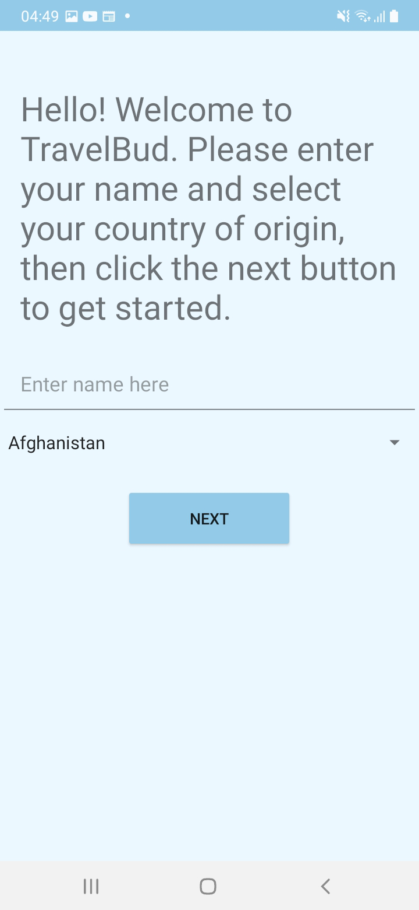
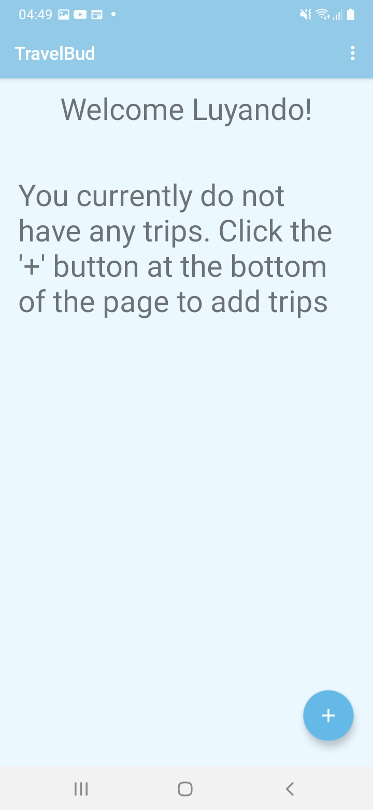
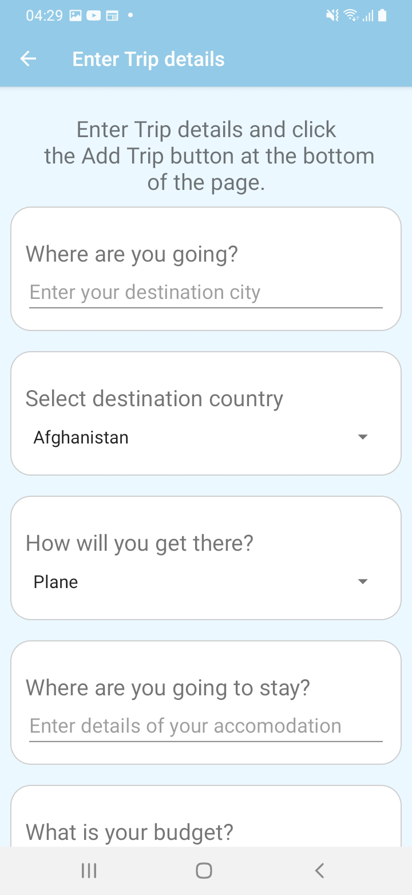
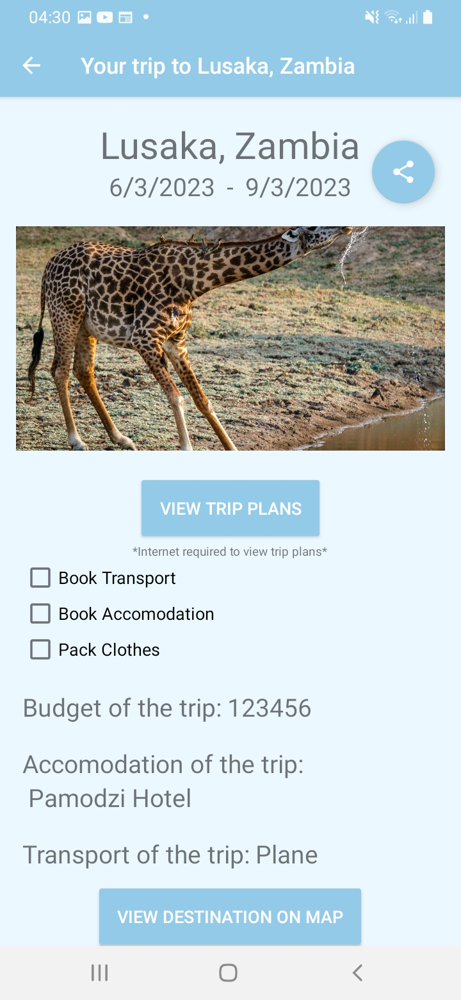
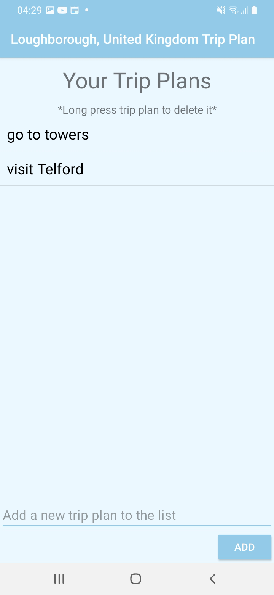

TravelBud Guide
TravelBud is a travel compnanion app that helps users to plan their trips before they go, allowing them to focus on the fun.
How TravelBud Works
The app allows you to keep track of all your planned trips, with a clean, user friendly and intuitive design. You are able to enter specific details about your trip, such as the destination, the date of travel, accommodation, budget and so on. For each trip, you can also enter details about the activities you will do each day of your trip. This app also provides users with a checklist on what you need to do before you travel allowing you to easily keep track of this. This app therefore helps you adequately prepare for your next trip. It also removes the hassle of keeping track of trip requirements.
Start up page
On start-up, you will be prompted to set up the app by entering your name and country of residence. This information will be stored in local storage and can be accessed and edited at any time from your settings.
Home page
Once you have set up the app, you will be taken to the home page, where you can see all your trips. This page shows trip information such as the trip name and trip dates. You can also add a new trip by clicking on the "Add Trip" button shown as a '+' button on the bottom right of the screen (see image for reference).
Add trip page
Once you click on the add trip button, you will be taken to a page where you can add trips. From there you can go on to create trips, and add the details about each trip, which will then be stored in local storage. Please see image for reference.
Trip details page
Once you have added a trip, you will be taken back to the home page where you can see the trip you have just added. You can click on the view trip details button trip to view the details of the trip. This takes you to a page where you can see all the details of the trip. And it includes a checklist for the trip, which is all the things you need to do before you travel. On this page, you can also share the trip details with other users which allows you to inform them that you are leaving on that particular trip. You can also click view destination on map which opens google maps and shows you the location of the destination. You can also click view trip plans button which would take you to a page where you can see all the activities you have planned for that trip. At the bottom of the page, there is a button that allows you to delete the trip. This page requires internet to get the complete functionality out of it and be able to save the trip checklist and trip plans from the trip plan page as well. The page also shows an image of the destination country.
Trip plans page
On the Trip plans, you can add and delete trip plans for the trip. Clicking and holding a trip plan will delete it from the list. These trip plan details are stored using Firebase and therefore will require the user to connect to the internet at some point to be able to save the trip plans. However, Firebase does keep the changes in cache and will save them later if an internet connection is not currently available.
Settings page
Back on the home screen, there is a menu where you can access the settings page, this user guide and share information about the app with other users. On the settings page, you can edit your name and country of residence. This information is stored in local storage using shared preferences and can be accessed at any time. The share button allows you to share information about the app with other users in different ways. Please see images below to see how this menu and the settings page look.